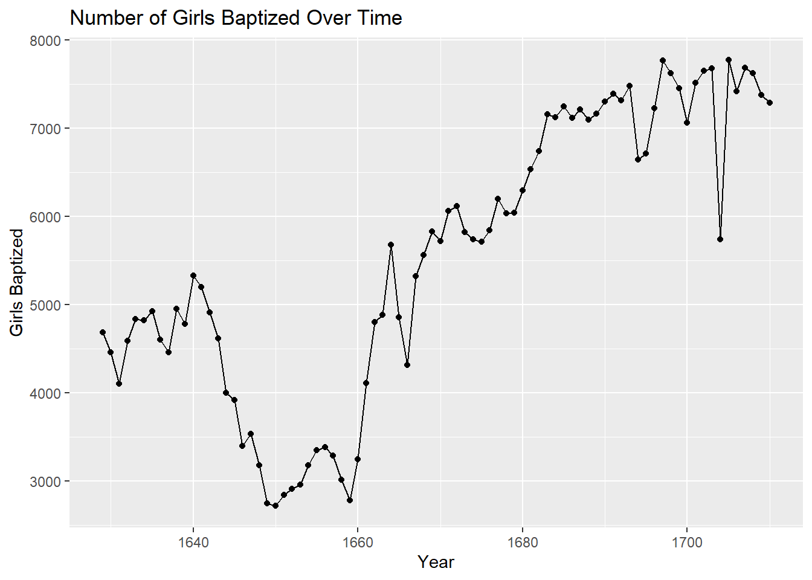
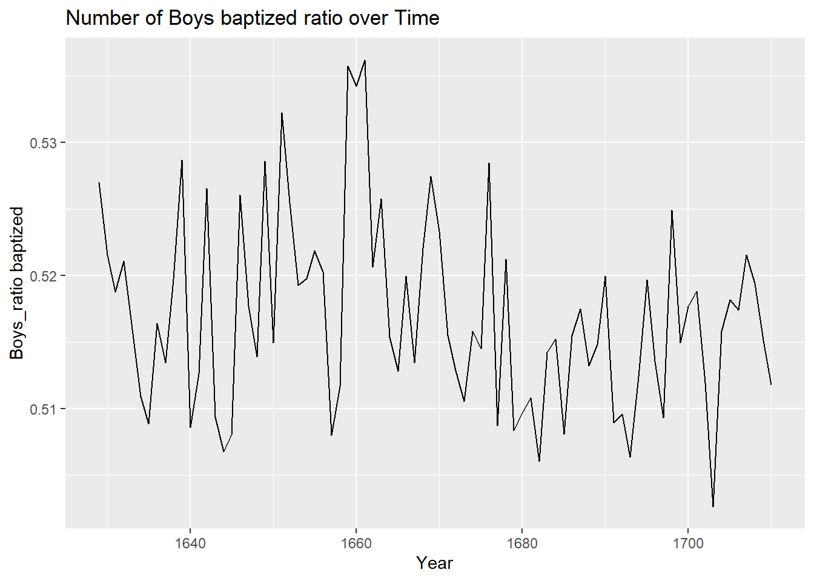

What command would you use to extract just the counts of girls baptized?
Ans: 82
girls_record<-arbuthnot$girlslength(girls_record)
[1] 82
Exercise 2
Is there an apparent trend in the number of girls baptized over the years? How would you describe it? (To ensure that your lab report is comprehensive, be sure to include the code needed to make the plot as well as your written interpretation.)
Ans: The number of girls baptized over the years is increasing therefore there is a positive linear.
ggplot(data = arbuthnot, aes(x = year, y = girls)) +geom_point() +geom_line() +labs(title ="Number of Girls Baptized Over Time",x ="Year",y ="Girls Baptized" )

Exercise 3
Now, generate a plot of the proportion of boys born over time. What do you see?
Ans: The number of boys baptized increased since 1660 and it became positive linear.
arbuthnot <- arbuthnot %>%mutate(total = boys + girls)arbuthnot <- arbuthnot %>%mutate(boy_to_girl_ratio = boys / girls)arbuthnot <- arbuthnot %>%mutate(boy_ratio = boys / total)ggplot(data = arbuthnot, aes(x = year, y = boy_ratio)) +geom_line() +labs(title ="Number of Boys baptized ratio over Time",x ="Year",y ="Boys_ratio baptized" )

More Practice
data('present', package='openintro')arbuthnot %>%summarize(min =min(boys), max =max(boys))
# A tibble: 1 × 2
min max
<int> <int>
1 2890 8426
Exercise 4
What years are included in this data set? What are the dimensions of the data frame? What are the variable (column) names?
Answer -
Year range: 1940 to 2002
dimension of the data frame: 63 x 3
Variable: “year” “boys” “girls”
range(present$year)
[1] 1940 2002
dim(present)
[1] 63 3
names(present)
[1] "year" "boys" "girls"
Exercise 5
How do these counts compare to Arbuthnot’s? Are they of a similar magnitude?
Ans: No, they are different than Arbuthnot’s, they are in millions and ranges from 1940 - 2002 and the Arbuthnot’s in thousands and ranges from 1629 - 1710.
Make a plot that displays the proportion of boys born over time. What do you see? Does Arbuthnot’s observation about boys being born in greater proportion than girls hold up in the U.S.? Include the plot in your response. Hint: You should be able to reuse your code from Exercise 3 above, just replace the dataframe name.
Ans: The proportion of boys had increased in the sixties and then declined in late seventies then increased again in the eighties. And yes, Arbuthnot’s observation about boys being born in greater proportion than girls hold up in the U.S. is ture.
present <- present %>%mutate(total = boys + girls)present <- present %>%mutate(boy_to_girl_ratio = boys / girls)present <- present %>%mutate(boy_ratio = boys / total)ggplot(data = present, aes(x = year, y = boy_ratio)) +geom_line() +labs(title ="Boys ratio over Time from Present Dataset",x ="Year",y ="Boys_ratio" )
arbuthnot <- arbuthnot %>%mutate(total = boys + girls)arbuthnot <- arbuthnot %>%mutate(boy_to_girl_ratio = boys / girls)arbuthnot <- arbuthnot %>%mutate(boy_ratio = boys / total)ggplot(data = arbuthnot, aes(x = year, y = boy_ratio)) +geom_line() +labs(title ="Boys ratio over Time from Arbuthnot Dataset",x ="Year",y ="Boys_ratio" )
The graph is very different from Arbuthnot’s observation, the boy_ratio decreasing with time.
Exercise 7
In what year did we see the most total number of births in the U.S.? Hint: First calculate the totals and save it as a new variable. Then, sort your dataset in descending order based on the total column. You can do this interactively in the data viewer by clicking on the arrows next to the variable names. To include the sorted result in your report you will need to use two new functions: arrange (for sorting). We can arrange the data in a descending order with another function: desc (for descending order). The sample code is provided below.